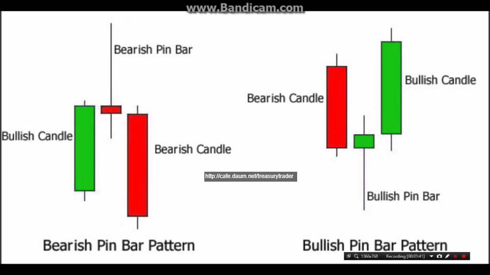
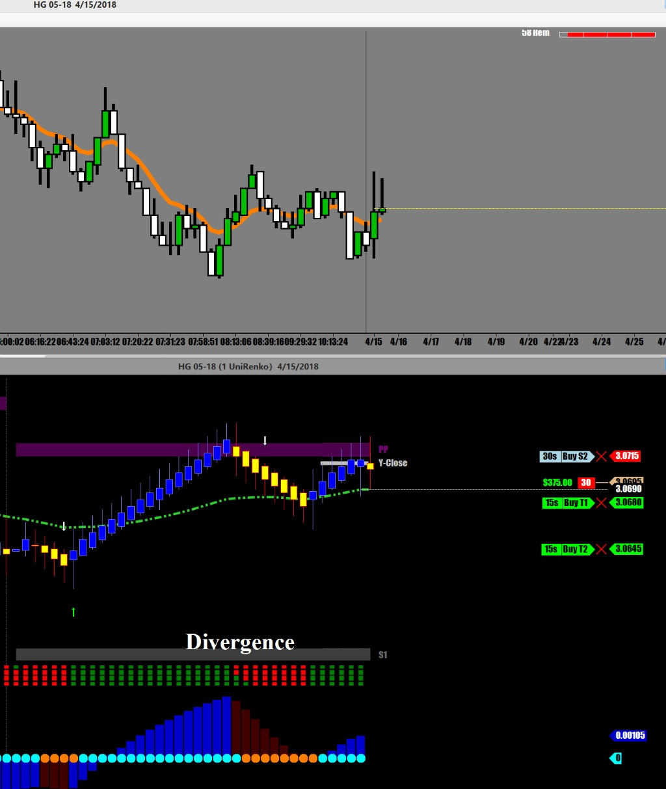
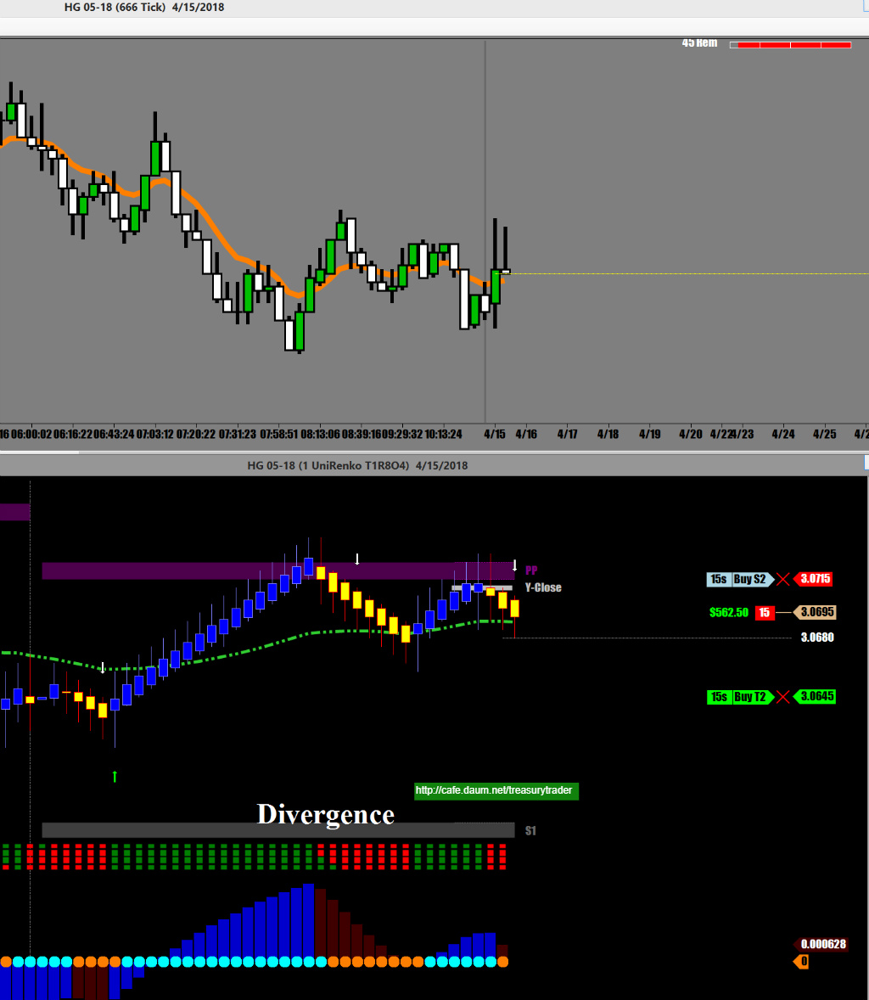
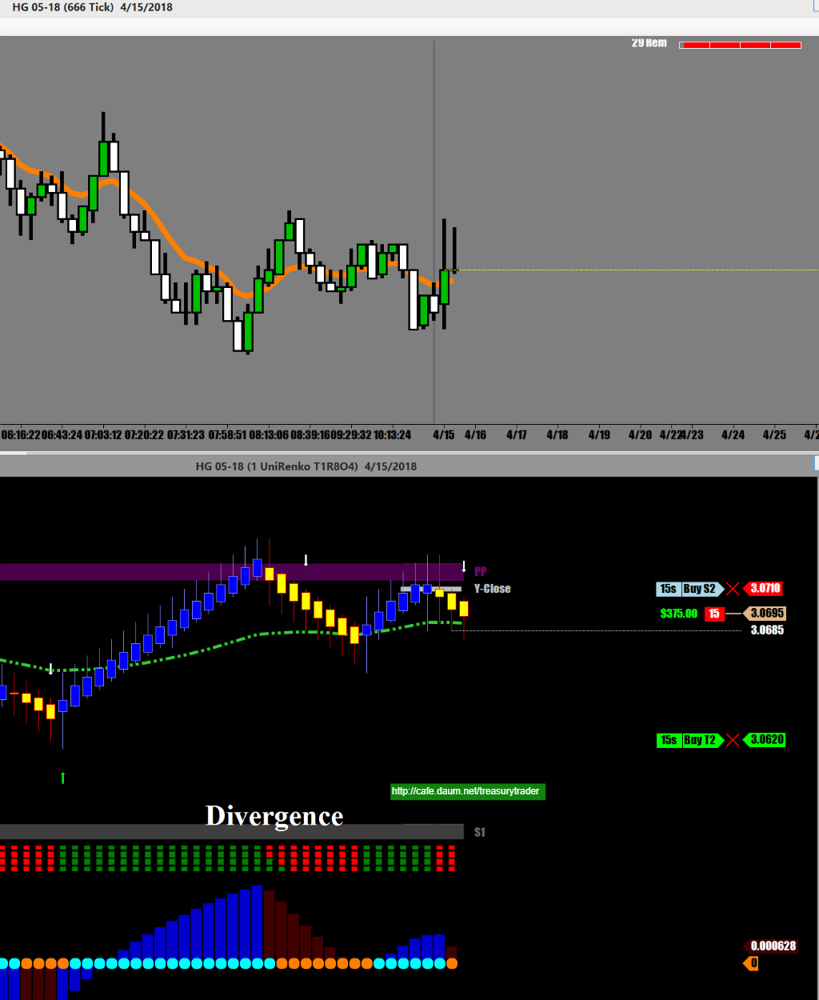
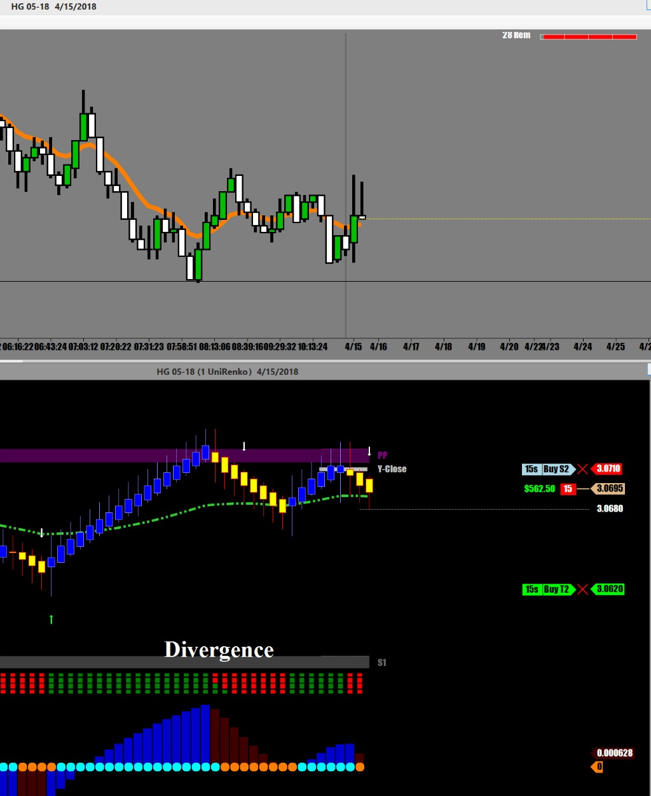
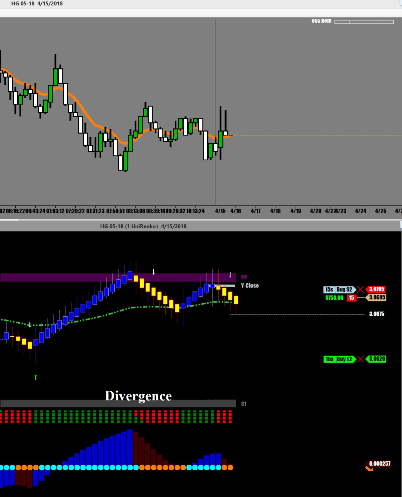
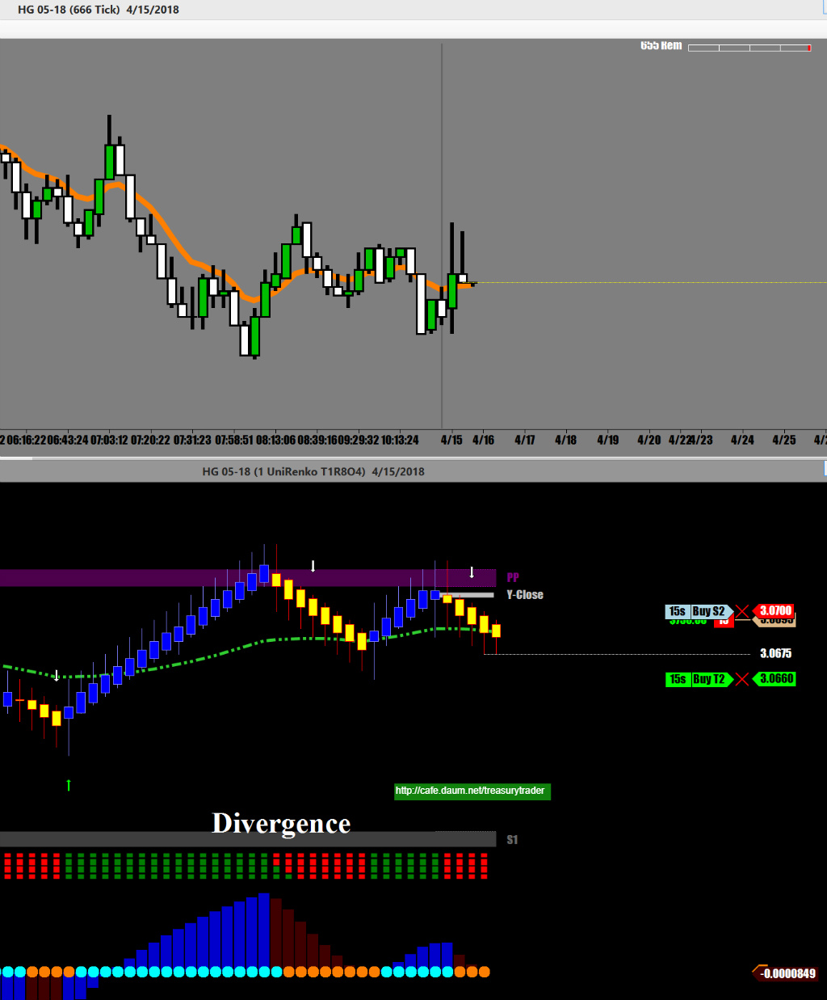
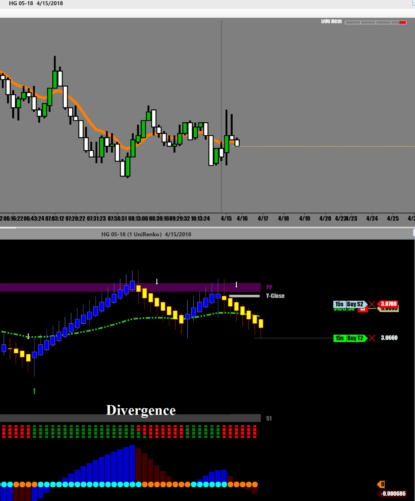
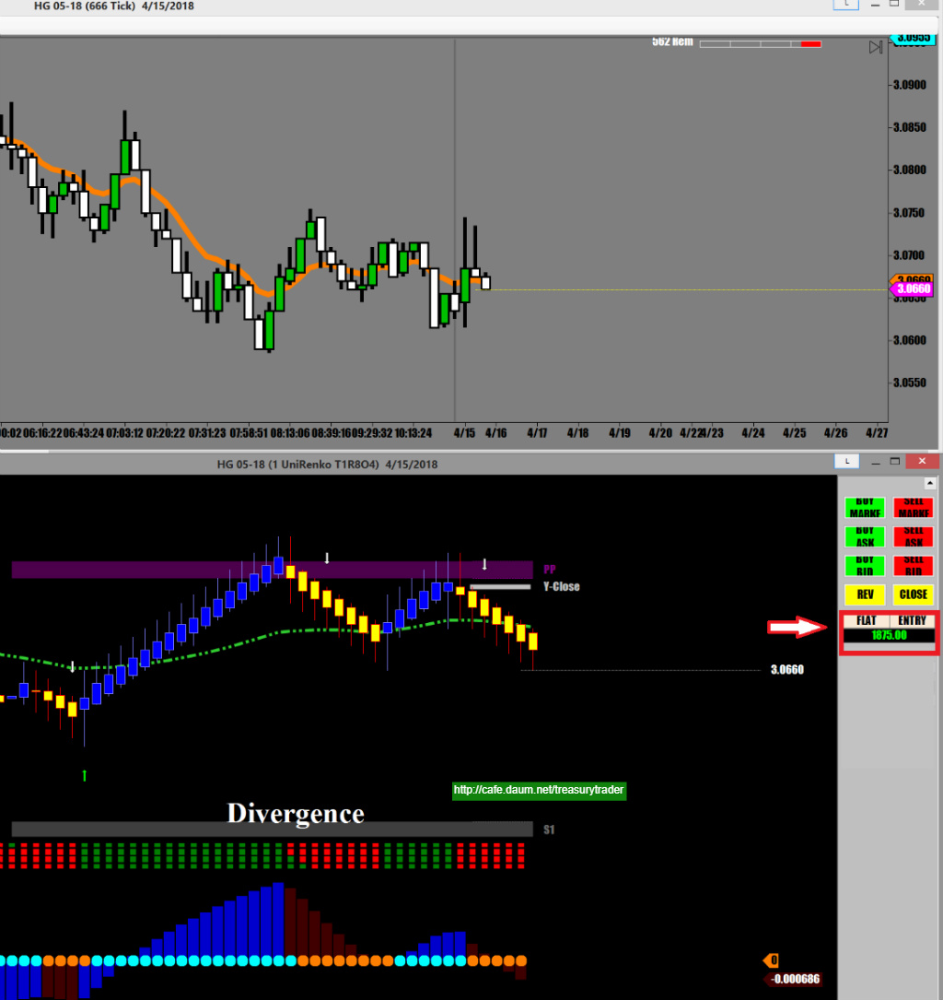

일요일 오후 3시 장외마켓 오픈
오늘은 구리로 시작
대개의 경우 주말동안 증시에 큰 영향을 미칠만한 뉴스가 터지면
국채로 붙는게 유리함. 장외마켓 오픈하자마자 큰폭으로 날아감
지금은 미국의 시리아 공습으로 크루드오일이 난장판이 나는 중이고
언제나 그렇듯이 미친여성분 널뛰기 하시는듯한 선물인 크루드오일은 건드리고 싶지않은 상황
예측이 불가능한 상황에서는 어떤 선물이든지 Just stay away from it !!
뭘로가든지 서울만 가면 된다고
어떤 선물을 매매하든지 수익만 나면 된다능..
이왕이면 매매하기 쉬운걸로 가는게 맞다고 봄
시리아 공습으로 세계경제에 부정적인 영향이 미칠것이 뻔하니 구리가격은 하락할것이 예상되므로
구리선물로 매매시작
하락으로만 매매할 예정임

일단 기다렸다가 이평선 위에서 위로 긴 꼬리 두개를 만드는걸 보고 진입
특히 두번째 캔들이 그 유명한 Pin Bar
Pin Bar가 만들어진 지점이 오늘의 메인 피봇
항상 강조하지만 캔들패턴이 만들어진 지점이 중요
모든 패턴이 다 유효한게 아니라
중요한 지점에서 만들어진 캔들패턴이 중요함


일차목표 달성, 절반 정리
항상 절반은 적게라도 수익을 만들어놓고 시작해야 함
그래야 혹시라도 중간에서 반대로 튀어 올라 손절에 걸리더라도 손실이 적어짐

손절을 내림
직전캔들 꼭대기



장외마켓이라 거래량도 적고 움직임도 약하기 때문에 랜딩포인트를 조절
전저점으로 상향 조정
going
going...

Done !!

좀 더 갈것 같았지만 일단 욕심을 버리고..
한 주간 첫매매를 산뜻하게 끝맺음 함
9분 정도 매매해서 $1,875 수익
오늘의 매매포인트
1. 일요일 장외마켓 오픈할 때
주말에 큰 뉴스 터졌으면 국채로 붙어야 하고
아닐 경우는 구리선물이 움직임이 좋기 때문에 구리선물로 붙는게 좋음
오늘은 시리아 폭격으로 크루드오일과 구리선물이 크게 움직일것 같음
2. 중요한 피봇 지지(저항)에서 만들어진 캔들패턴은 좋은 매매신호 임
이제 한시간 후에 홍콩 증시 열리는 시간에 또한번 큰 움직임이 있기 때문에
그때까진 휴식임